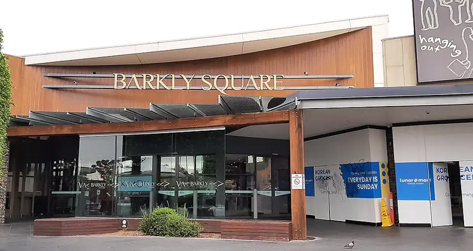

Barkly Square, Brunswick
Barkly Square is a shopping centre in Brunswick, in the Merri-Bek City Council area, handy for a rainy day or a quick stop. Barkly Square SC/Barkly St (bus) is a 2-minute walk away and the nearest public toilet is about 278 m away with a baby change table.


Quick facts
- Address
- 90-106 Sydney Road, Brunswick, 3056
- Toilets
- 278 m away, baby change, accessible
- Public transport
- Barkly Square SC/Barkly St, bus (routes 509), 2 min walk
This page has basic info from the map: name, location and type. We have not checked the details yet. Know this place? Tell us.
Details
- Address
- 90-106 Sydney Road, Brunswick, 3056 (OpenStreetMap)
Questions parents ask
- Where is Barkly Square?
- Barkly Square is in Brunswick, Victoria, at 90-106 Sydney Road, Brunswick, 3056.
- Are there toilets at Barkly Square?
- The nearest public toilet is about 278 m away, with a baby change table.
- How do I get to Barkly Square by public transport?
- The closest stop is Barkly Square SC/Barkly St (routes 509), a 2-minute walk.
Nearby places
- Sushi Sushi
Cafe or restaurant · BrunswickToilet nearbyBus 2 min walk
- Boost Juice
Cafe or restaurant · BrunswickToilet nearbyBus 2 min walk
- Wilson Avenue Park
Park · BrunswickToilet nearbyFreeTram 1 min walk
- Barkly Street Park
Park · BrunswickFreeBus 3 min walk
- Playground at Barkly Street Park
Playground · BrunswickFreeBus 4 min walk
- Brunswick Library
Library · BrunswickToilet nearbyFreeTram 1 min walk
- Playground at H. W. Foletta Park
Playground · BrunswickFreeBus 1 min walk
- Clifton Park Skatepark
Skate, BMX or pump track · BrunswickFreeBus 2 min walk